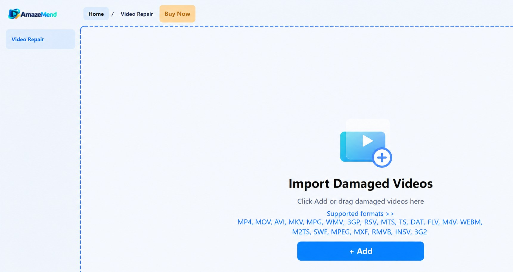
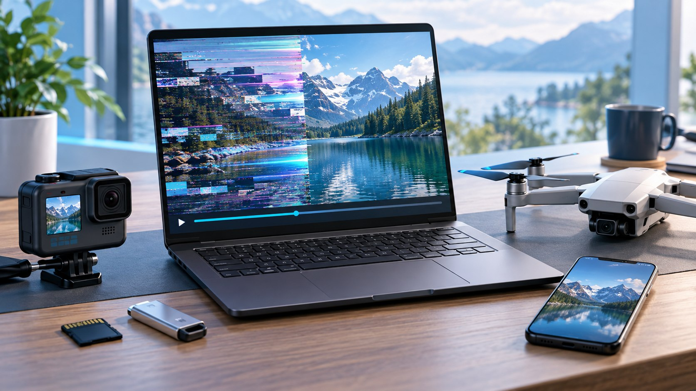

Cannot open or play
Address files rejected by the player or recordings that stop immediately.
Repair user-provided videos that will not open, freeze, stutter, lose sound, or fall out of sync after recording, transfer, or storage problems.

Use AmazeMend when the file exists but normal players cannot open or play it correctly.
Address files rejected by the player or recordings that stop immediately.
Repair damaged structures that can interrupt playback or leave a video stuck.
Reconstruct playable output where corruption creates broken or distorted frames.
Recover usable audio/video timing when sound is missing, early, or delayed.
Work with files affected by a crash, power loss, interrupted write, or failed transfer.
Add several videos to one session and process the available repairs together.
No repair tool can guarantee recovery of every damaged file. Results depend on whether enough usable video data remains.
This recorded test uses an actual damaged file named damage.mp4. Before repair, the MP4 container could not be opened. AmazeMend rebuilt a playable output that could be previewed and saved.
Add the damaged file, start repair, preview the result, and save the repaired video.
The damaged 17.65 MB file reported 0 fps and no audio in the app. Independent media inspection returned moov atom not found.
This is a 30-second excerpt from the repaired 11:51 video, encoded as H.264 video with AAC audio.
Test scope: This is one documented repair example, not a guarantee that every damaged file can be recovered. Results depend on the type and extent of corruption.
Start with the simplest workflow and move to a reference-assisted repair only when needed.
Import a damaged video and let AmazeMend analyze and rebuild the file directly. This mode is designed for common container and playback corruption.
Add a healthy sample recorded by the same device, or a video with matching format characteristics, to help reconstruct the damaged file.
Drag files into AmazeMend or use the Add button to browse your computer and connected storage.
Run quick repair, or provide a compatible sample video for advanced repair.
Check picture, sound, timing, and playback continuity for up to 30 seconds.
Enter your purchase email and license key, then save one result or all available results.
The free workflow lets you run a supported repair and play a repaired preview. A paid license is needed only to save the complete repaired output.
AmazeMend repairs the selected video through the desktop application instead of uploading the file to an online repair service. Internet access is used for licensing and purchase-related services.

Illustrative source-device sceneUse files from cameras, action cams, drones, dash cams, phones, SD cards, USB drives, hard drives, and computer storage.
Answers to common questions about previews, local processing, formats, and licensing.
Use the result to decide whether a paid export license is right for your file.